How it works
Five steps, one window
The bar at the bottom always names the next thing to do. Every control explains itself when you hover over it.
For manuscripts and rare bindings
Photograph an object from a fixed camera, moving only the light. Helio turns that handful of frames into the surface itself: its relief, its tooling and impressions, lit any way you like, measured, modelled in 3D and ready to publish.
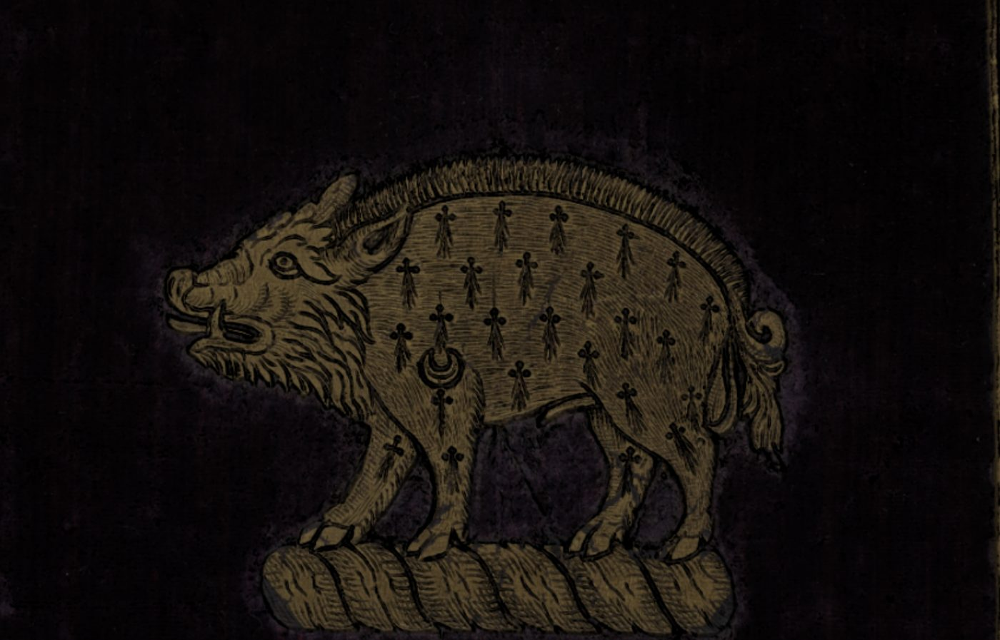
How it works
The bar at the bottom always names the next thing to do. Every control explains itself when you hover over it.
Drop a folder of photographs on the window. Helio finds the chrome ball, reads the highlight in every frame and plots each light on a dome, with a verdict on how well the lights are spread.
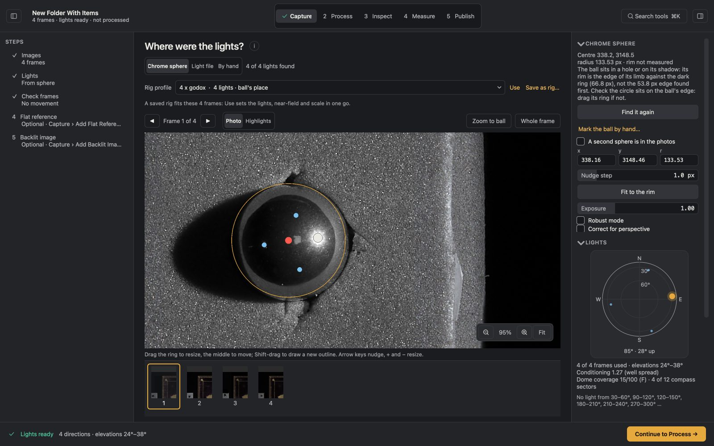
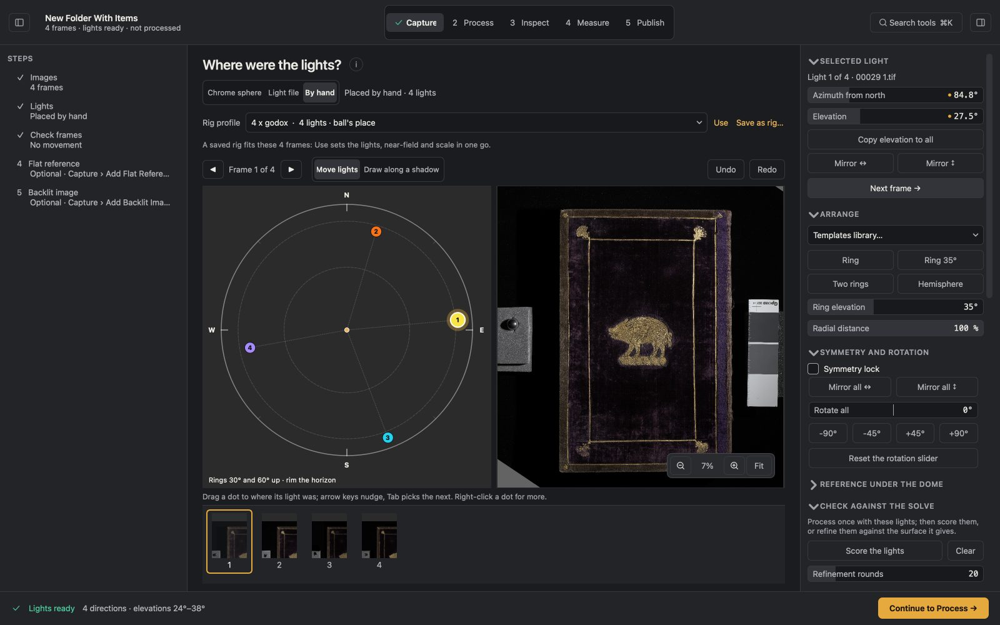
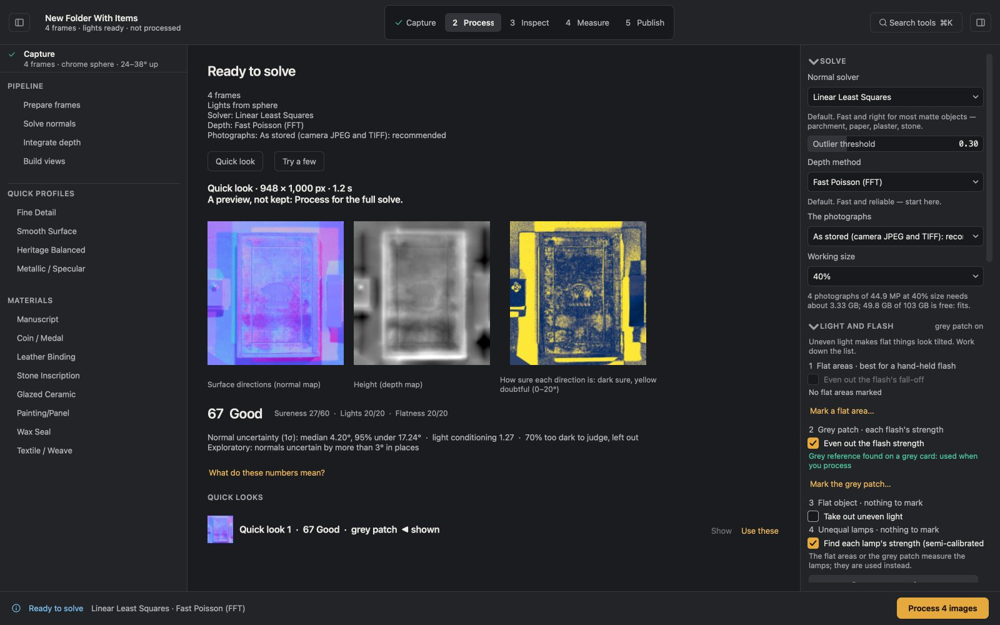
Try settings on a small copy in seconds, keep the best, then solve the full surface. The heaviest arithmetic runs in Rust across every core.
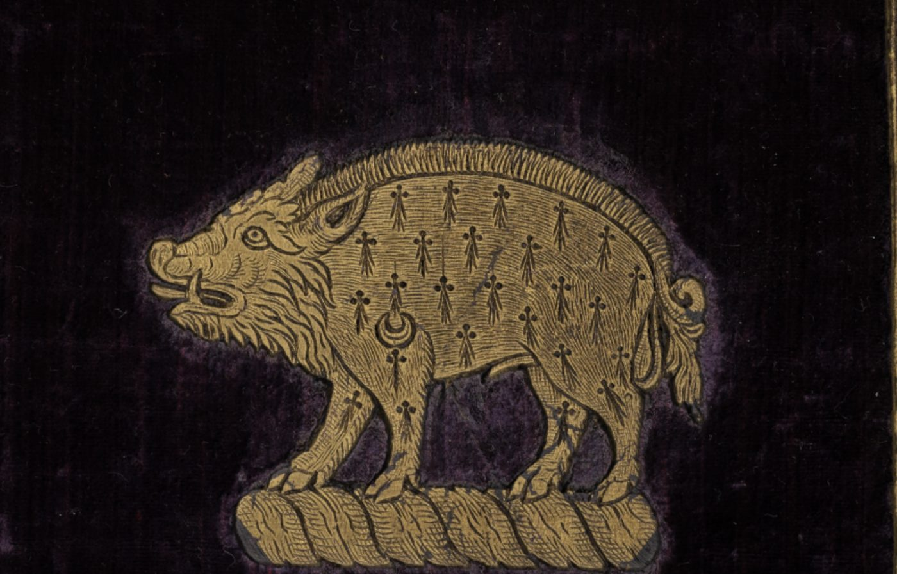
Forty-one ways to read the same surface, each answering a different question: where the light rakes, where the relief is, where the grooves run, where the gold shines. The loupe shows full resolution under the pointer.
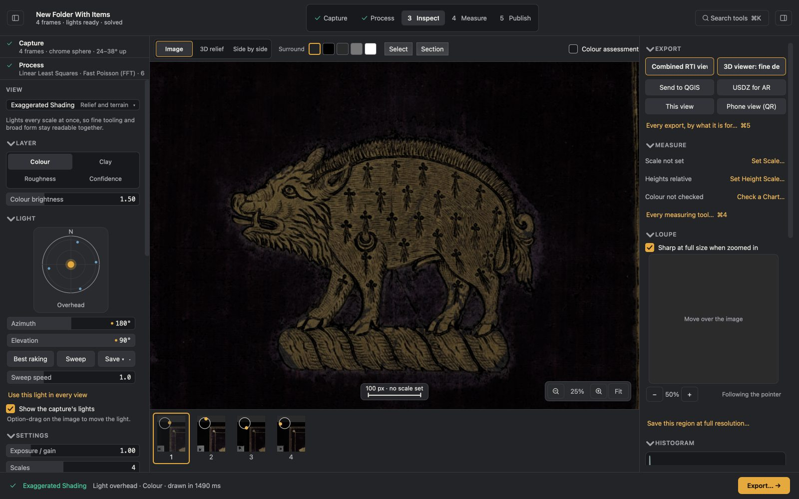
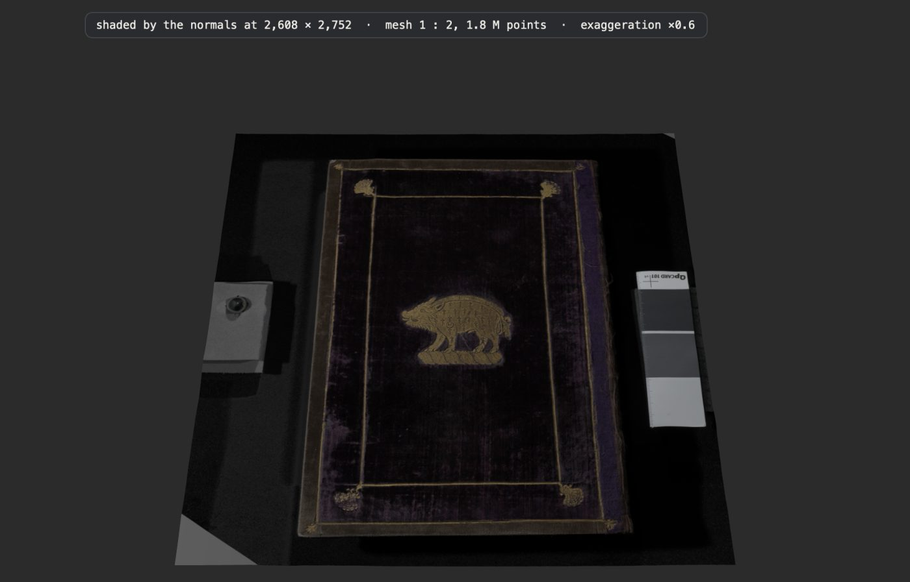
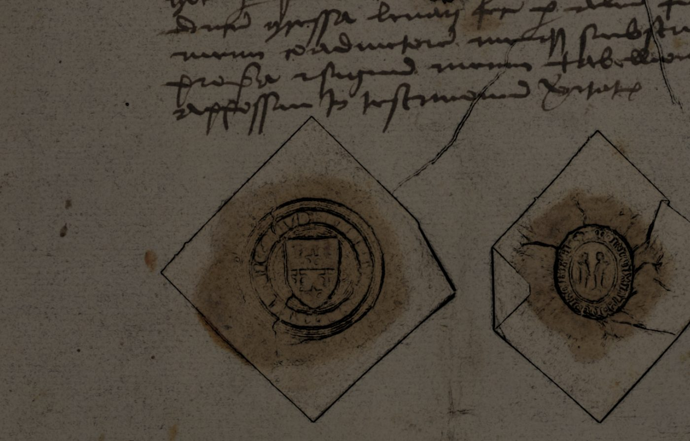
Set the scale from a ruler in the shot, then measure in millimetres: distances, height profiles with ISO 4287 roughness, areas, volumes and ISO 25178 surface statistics.
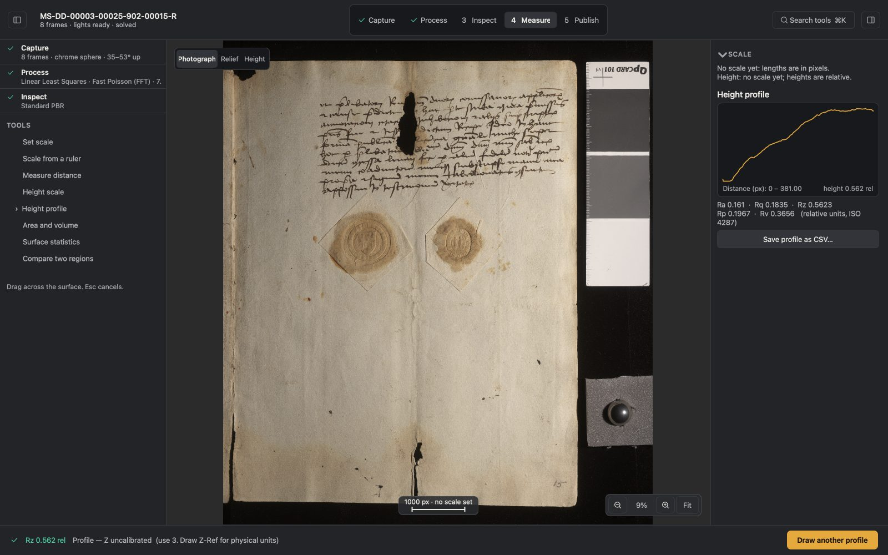
Tick what you need by what it is for: images, surface maps, 3D models, web viewers, reports, archives, GIS. Choose who a model is for and Helio sets the density, texture size and files to suit.
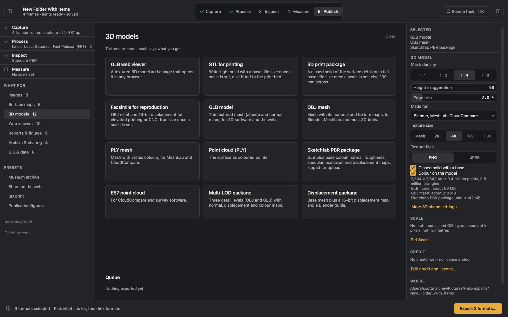
One capture, many readings
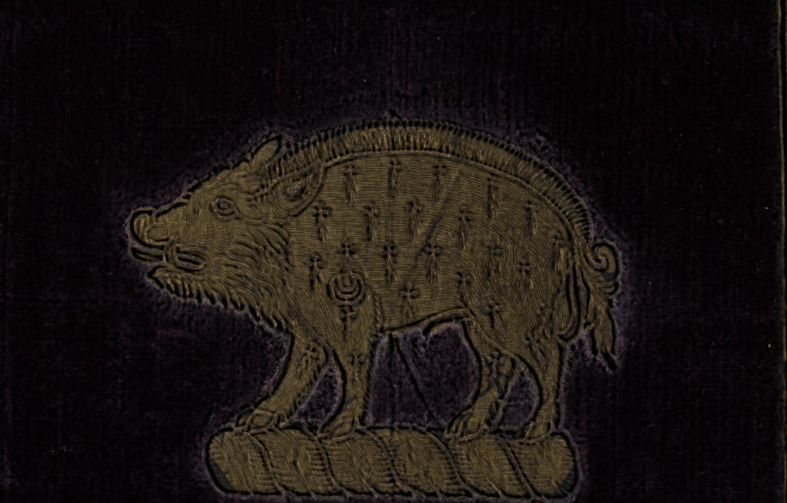
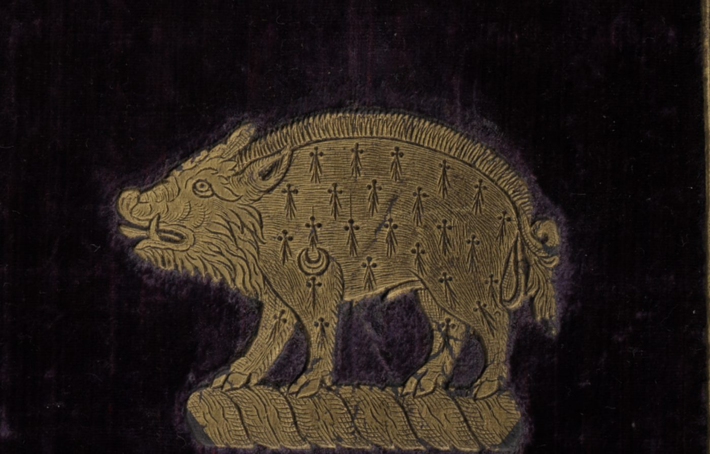
New in this release
Gilding, embroidered gold and clasps are found and solved on their own, with a solver that sets highlights aside. Paper, leather and cloth keep the usual solver.
Each lamp's strength comes from the photographs, with nothing to mark. On a hand-lit binding it halved the false tilt of a flat grey card.
RBF relighting interpolates your own photographs, so highlights on gold, vellum and wax stay where and as sharp as they were.
Solve a 75-megapixel deed small to look at it, then any region again at full resolution, using a fraction of the memory.
Blender, the web, phones, the archive or printing: density, texture size, JPEG or PNG and a closed base, set together.
The solver, relighting and mesh writing run in Rust on every core. The four-frame binding here, solved at a third of its 45 megapixels, took under five seconds.
Getting it
Open the disk image and double-click Install Helio. It copies Helio to Applications and clears the download flag that otherwise makes macOS call an unsigned app "damaged". Nothing runs at startup and nothing is sent anywhere.
Helio is open source under the MIT licence. The solvers are plain NumPy and SciPy with Rust kernels; no GPU or deep-learning runtime is needed.